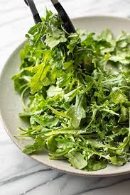

Home page
Arugula salad

Description
Aragura salad This juicy, vibrant arugula salad features fresh cherries, peaches, and nectarines
for a summery flavor. For an extra touch of sweetness, opt for rosé vinegar, a
several layers of lasagna sheets with sauce and other ingredients, such
rosé wine-based vinegar with a bright, fruity flavor.
Ingredients
- 2 tablespoons extra-virgin olive oil
- 2 tablespoons red wine vinegar or rosé vinegar
- 3/4 teaspoon salt
- 1/2 teaspoon black pepper
- 1 1/2 cups red cherry tomatoes, halved
- 1 1/2 cups yellow cherry tomatoes, halved
- 3/4 cup fresh basil leaves
- 2 nectarines, sliced
- 1 large white peach, sliced
- 1 cup Rainier or other yellow-flesh cherries, pitted and halved
- 1/2 teaspoon flaky sea salt
How to Make Lasagna Step-By-Step
- Whisk together olive oil, vinegar, salt, and pepper in a small bowl for the dressing.
- Arrange tomatoes, arugula, basil, nectarines, and peach slices on a large platter.
- Drizzle with half the dressing. Top with cherries, sea salt, and remaining dressing.
- Layer the lasagna according to the recipe instructions
- Serve immediately.